M.S. Thesis

- M.S. Thesis
- >
Master Thesis
[29]
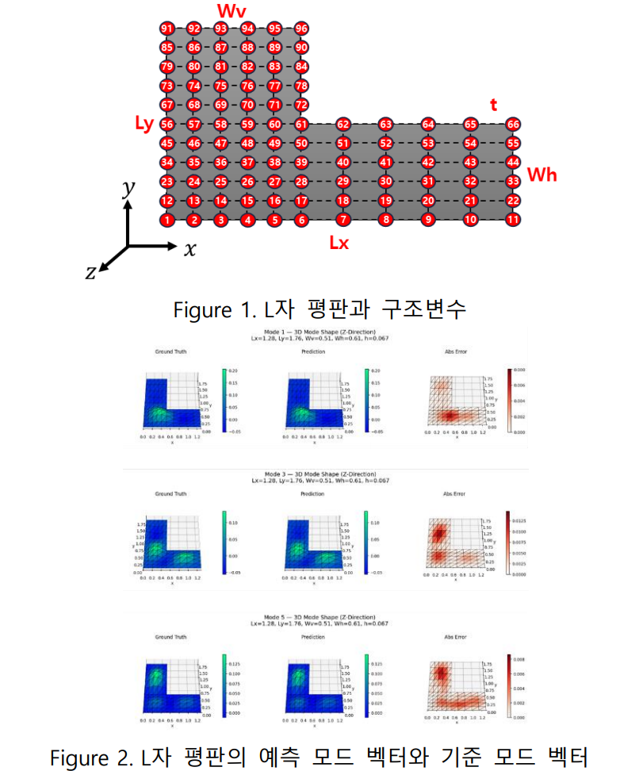
29. 물리 지식 기반 심층 연산자 신경망을 이용한 다양한 구조변수에
대한 구조물의 모드 해석
PI-Deep Operator Network based Structural Modal Analysis
for Various Structural Parameters
장강민, 2026
[첨부파일]
[첨부파일][28]
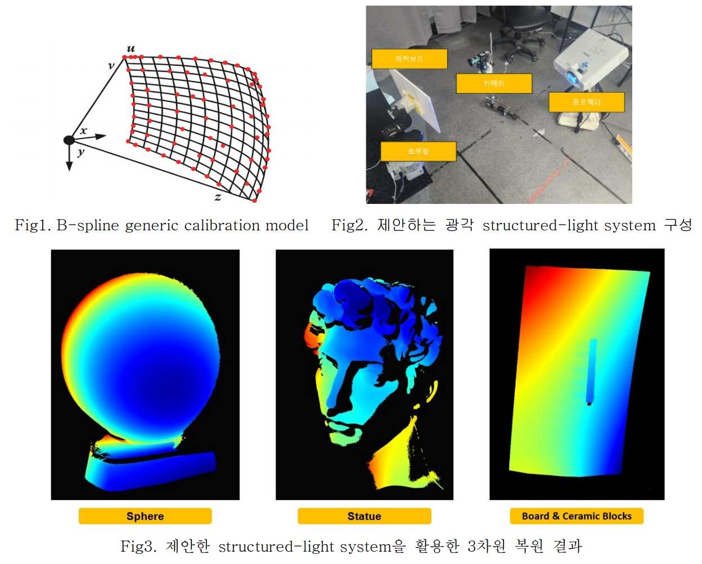
28. 광각 카메라-프로젝터 시스템의 정밀 3D 계측을 위한
Generic 캘리브레이션
Generic calibration of wide-FOV camera-projector system for
precision 3D measurement
조만희, 2026
[첨부파일]
[첨부파일][27]
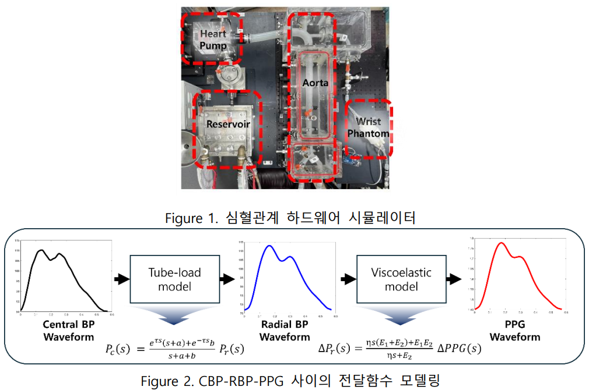
27. 모듈화된 맥파 전달 특성을 이용한 물리지식기반 PPG-중심동맥압
추정 네트워크
Physics-Informed PPG-to-Central Blood Pressure Estimation Network
Using Modular Blood Pressure Transmission Characteristics
송현우, 2026
[첨부파일]
[첨부파일][26]
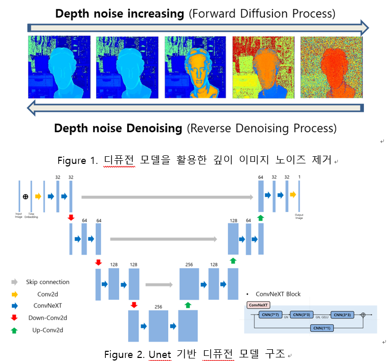
26. 디퓨전 모델을 이용한 간접 ToF 센서 깊이 이미지의 외광
노이즈 제거
Ambient Light Noise Suppression in Depth Image of Indirect
Time-of-Flight Sensors Using a Diffusion Model
안석준, 2025
[첨부파일]
[첨부파일][25]
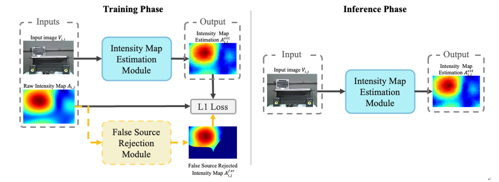
25. 빔포밍 어레이를 이용해 학습된 영상 기반 음원 위치 및 강도
맵 추정 방법
Image-based Sound Source Localization and Intensity Map Estimation
Method Trained Using a Beamforming Array
김진, 2025
[첨부파일]
[첨부파일][24]
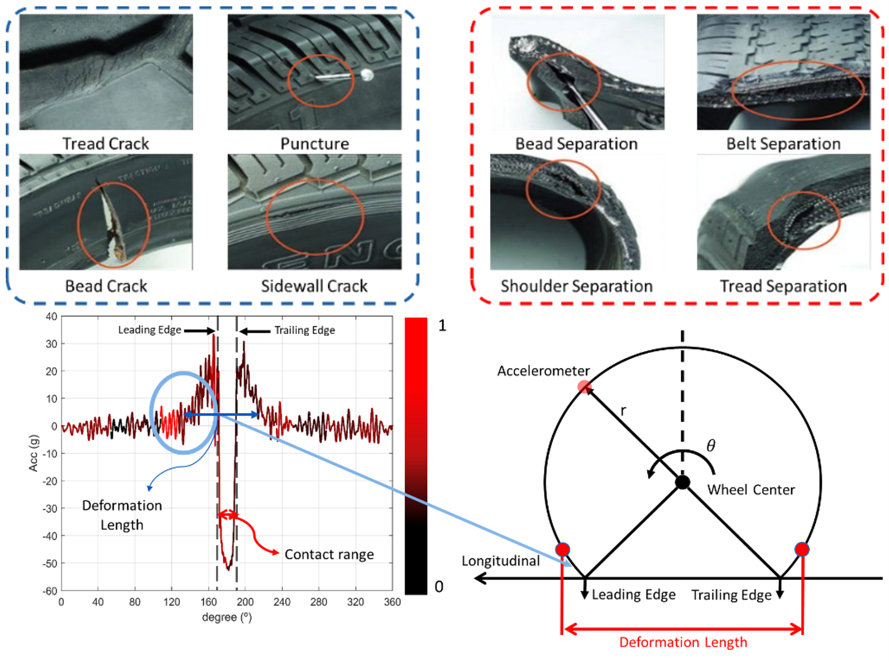
24. 진동데이터와 병렬 1차원 합성곱 신경망을 이용한 인텔리전트
타이어의 상태 진단 기법 연구
Condition Monitoring of Intelligent Tires Utilizing Parallel 1D CNN
and Vibration Measurement
김준호, 2025
[첨부파일]
[첨부파일][23]
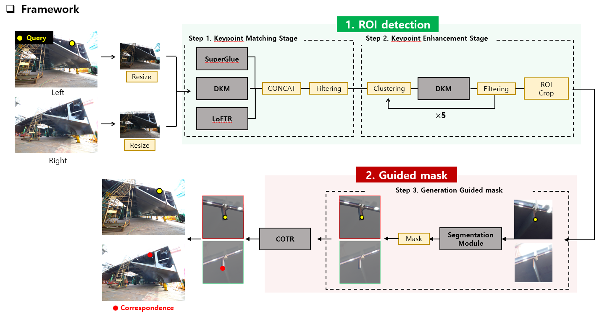
23. Keypoint 기반 ROI에서의 Guided Mask를 이용한 대규모
선체블록의 스테레오 매칭 기법
Stereo matching technique for large-scale ship block using Guided
Mask in Keypoint-based ROI
김도현, 2024
[첨부파일][22]
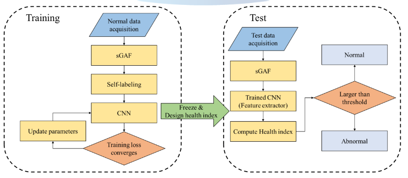
22. 회전기계 이상진단을 위한 전류신호와 포락선을 이용한 위상공간 이미지화 기법
Signal imaging with gramian angular field based on the
current signal and envelops for anomaly detection of rotating machine
윤성현, 2024
[첨부파일][21]
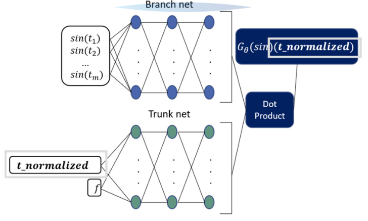
21. 심층 연산자 네트워크를 활용한 주기적 신호 훈련 및 중심대동맥
압력 추정에 대한 적용
Deep operator network for periodic signal problem with application
to central blood pressure monitoring
민창희, 2024
[첨부파일][20]
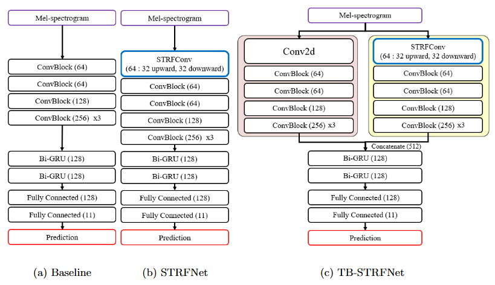
20. 청각 피질 뉴런 반응을 모사한 음향 이벤트 검출
Auditory cortex neural response-inspired sound event detection
민덕기, 2024
[첨부파일][19]
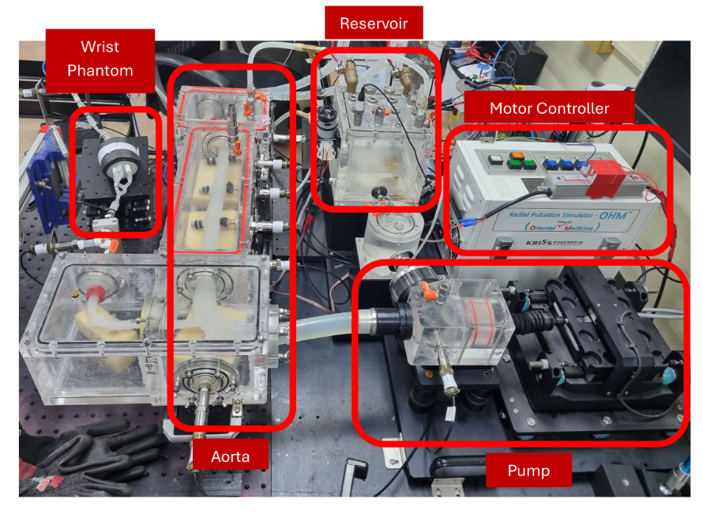
19. PPG 신호의 전달함수 분석을 이용한 중심동맥혈압 파형의 추정
Estimation of central blood pressure waveform using transfer function
analysis of Photoplethysmography (ppg) signals at wrist
아델, 2024
[첨부파일][18]
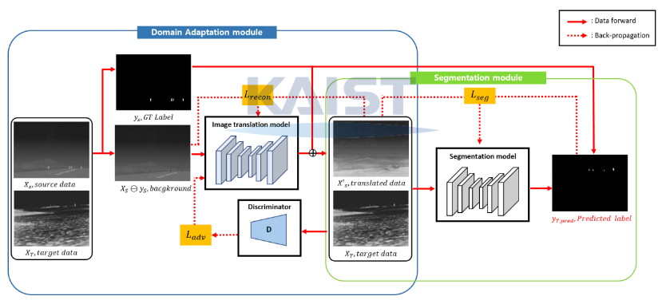
18. 딥러닝 네트워크와 데이터 증강을 활용한 적외선 이미지 기반의 해상 환경에서의 소형 요구조자 탐지 방법
Infrared image-based remote rescuee detection method in maritime
situation utilizing a deep learning network and data augmentation
정성진, 2023
[첨부파일][17]
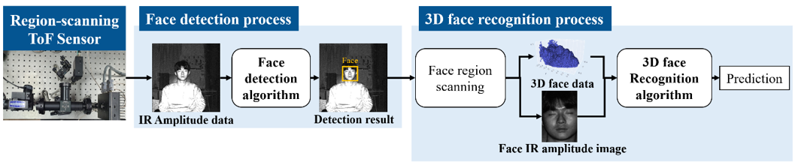
17. 고해상도 비행시간 측정 센서를 사용한 원거리 3차원 얼굴
인식 시스템
long distance 3D face recognition system using a novel high-resolution
Time-of-Flight sensor
임윤섭, 2023
[첨부파일]
[첨부파일][16]
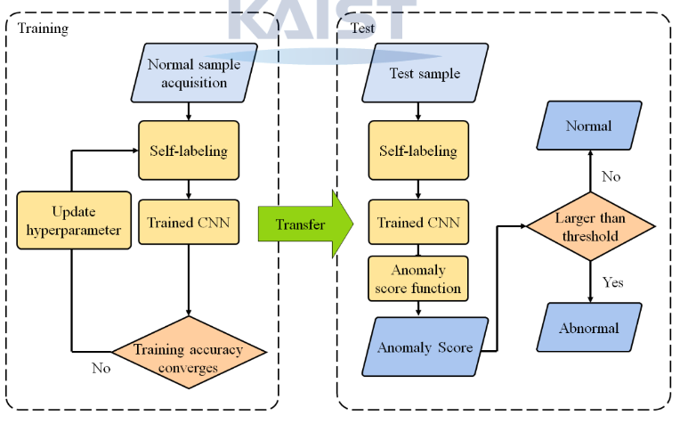
16. 자가학습기능을 가진 CNN을 이용한 정상데이터 기반 볼베어링
이상진단
Normal data-based ball bearing fault detection using CNN with
self-labeling
배재웅, 2022
[첨부파일][15]
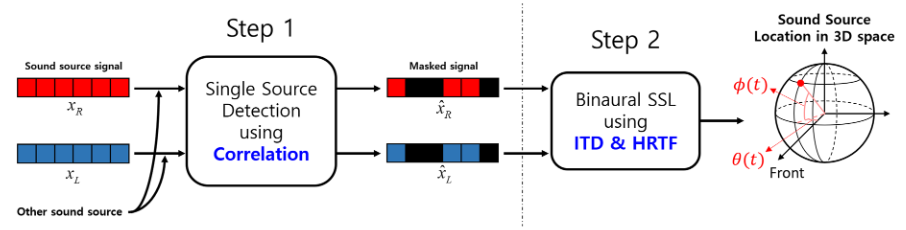
15. 머리전달함수 기반 음원 위치 추정을 위한 양이 상호상관 기반
시계열 데이터 마스킹 방법
Time data masking method using interaural cross-correlation for
sound source localization algorithm using head-related transfer function
최상민, 2022
[첨부파일][14]
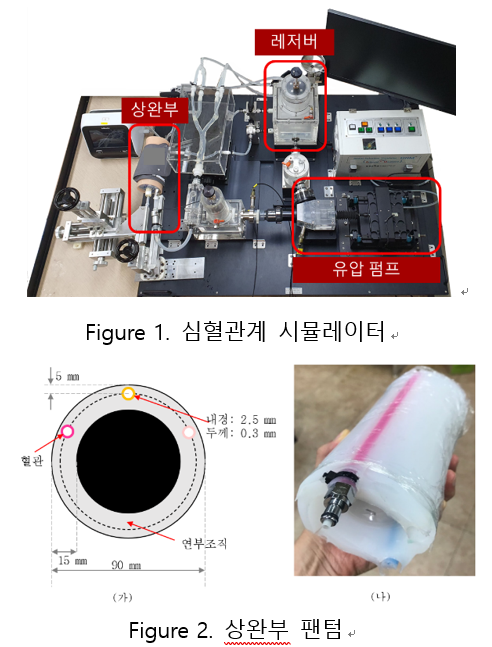
14. 오실로메트릭 신호의 전달함수 분석을 이용한 상완 동맥 혈압
파형의 추정
Estimation of brachial arterial blood pressure waveform using
transfer function analysis of oscillometric signals
홍준기, 2022
[첨부파일]
[첨부파일][13]
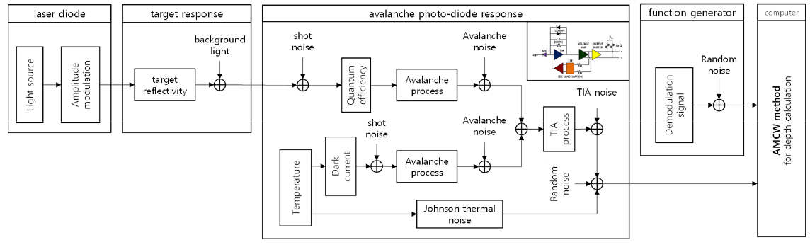
13. 멀티탭 병렬 복조 기반 고정밀 time-of-flight sensor
High precision time-of-flight sensor based on multi-tap parallel
demodulation
권욱현, 2022
[첨부파일][12]
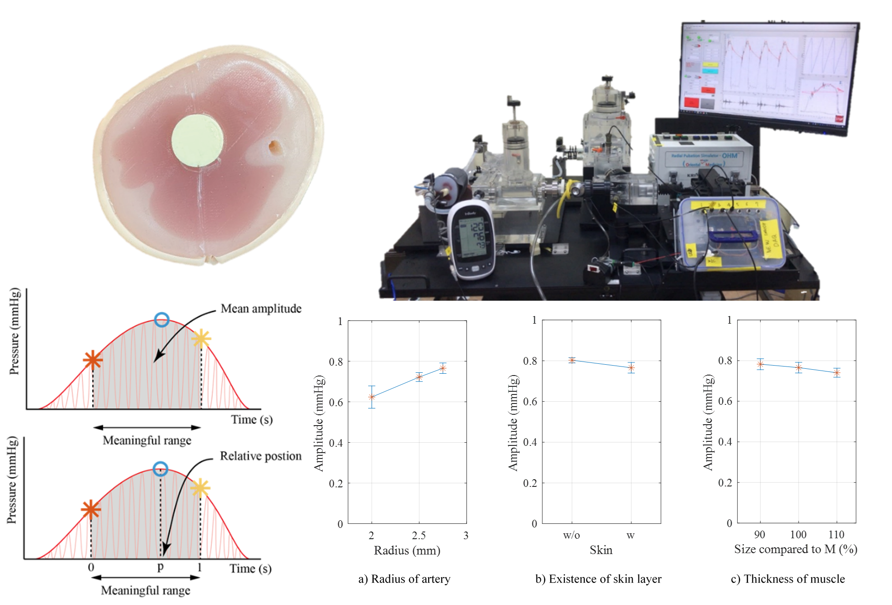
12. 혈압 측정시의 오실로메트릭 신호와 인체 상완부 파라미터의
상관관계 분석
Correlation analysis on human upper limb parameters and
oscillometric signal during blood pressure measurement
이보미, 2021
[첨부파일]
[첨부파일][11]
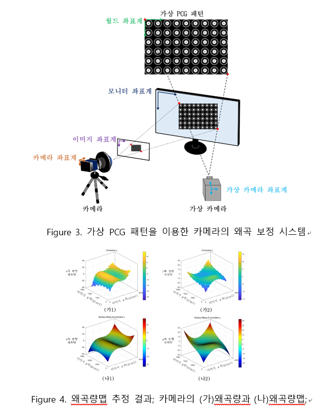
11. 스테레오 기반 Large scale 3차원 정밀 계측을 위한 가상 PCG 패턴을 이용한 영상 왜곡 보정 방법
Correction of image distortion using virtual PCG pattern in stereo-based
large-scale precision 3D measurement
김정민, 2021
[첨부파일]
[첨부파일][10]
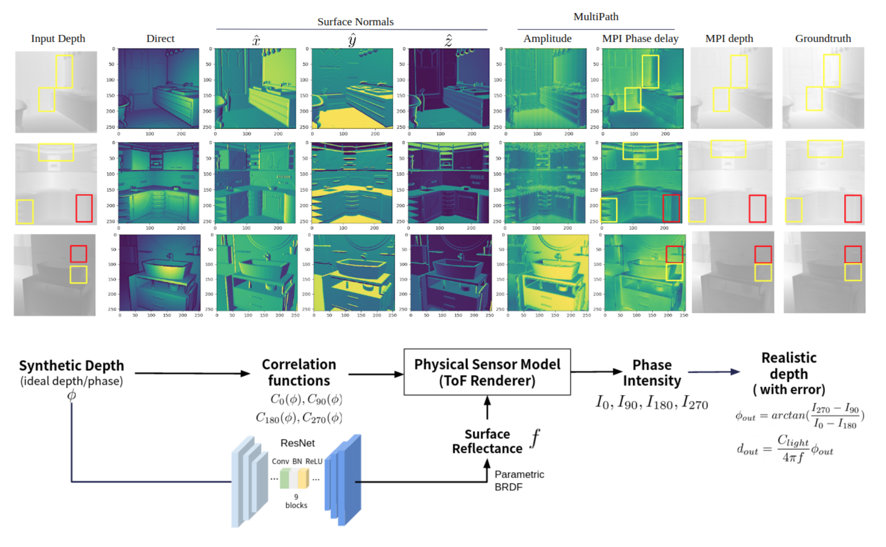
10. 센서 특성을 고려한 깊이 이미지의 비지도 합성 - 현실 이미지 전이 학습
Unsupervised synthetic-to-Real transfer learning of depth images
in consideration of sensor characteristics
Gulelat, Simeneh Semegne, 2021
[첨부파일][9]
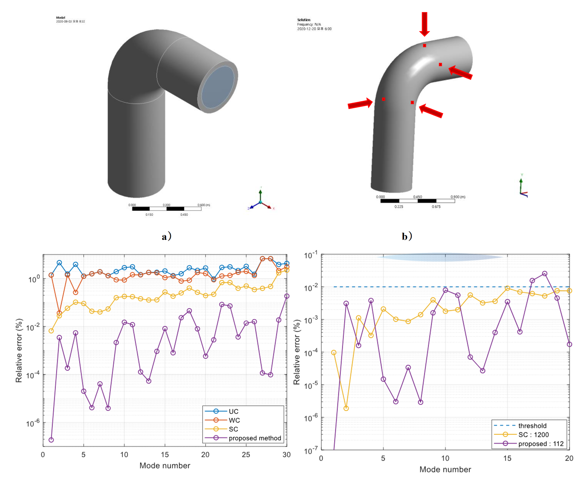
9. 동적으로 결합된 모달 기저를 이용한 유체-구조 연성 시스템의 모델
축소 기법
Model reduction of fluid-structure coupled system using dynamically
coupled modal basis
김현준, 2021
[첨부파일][8]
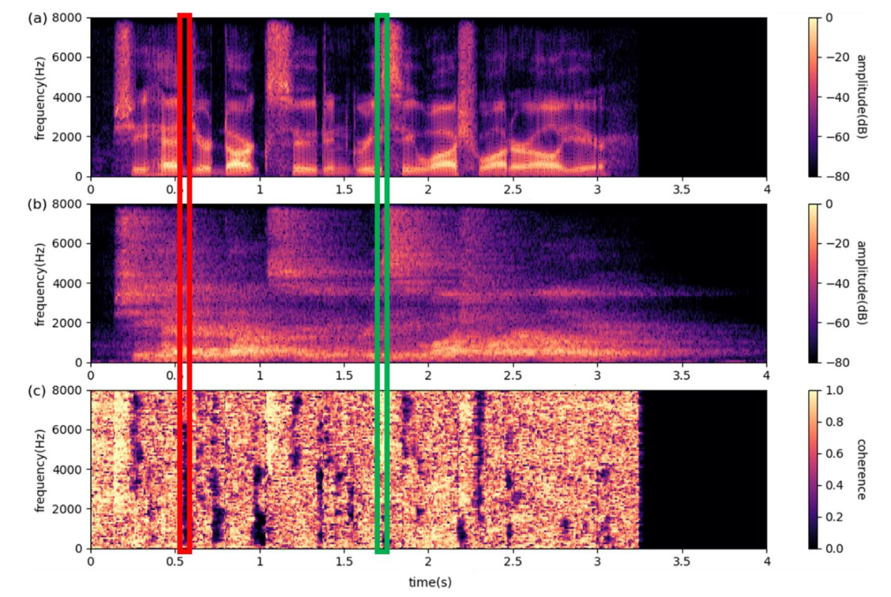
8. 잔향이 영어 음성인식 오류에 끼치는 영향의 코히런스 기반 정량적 분석
Coherence-based quantitative analysis of reverberation effect on
english automatic speech recognition error
남현욱, 2020
[첨부파일]
[첨부파일][7]
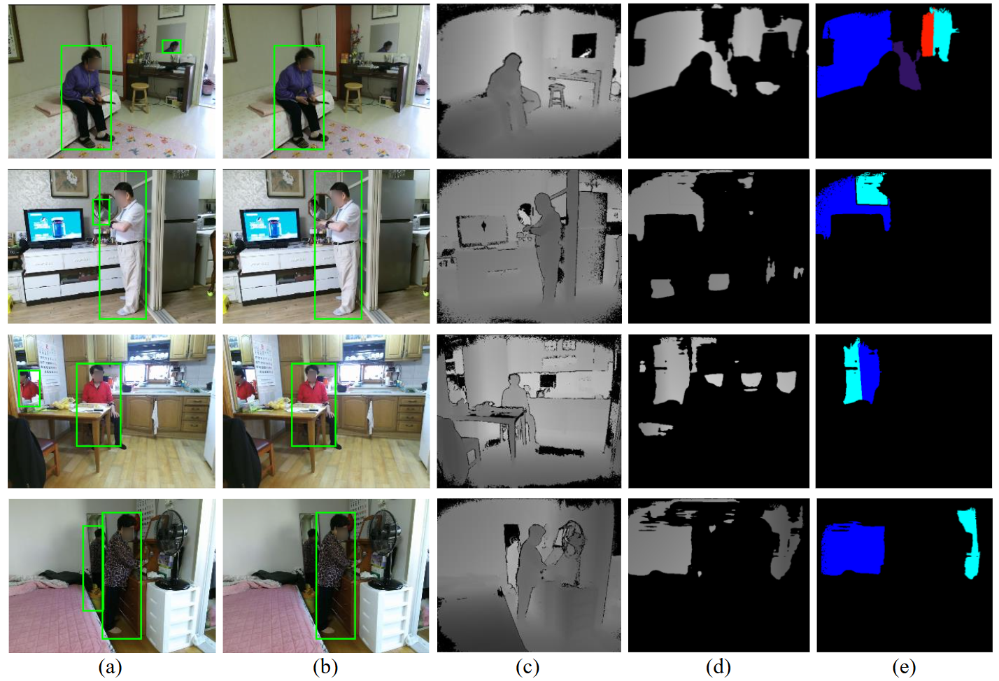
7. 3차원 깊이 정보를 이용한 영상인식에서의 반사로 인한 허상의
제거 방법
Removal of reflected virtual images in visual recognition utilizing
3D depth information
박대희, 2020
[첨부파일][6]
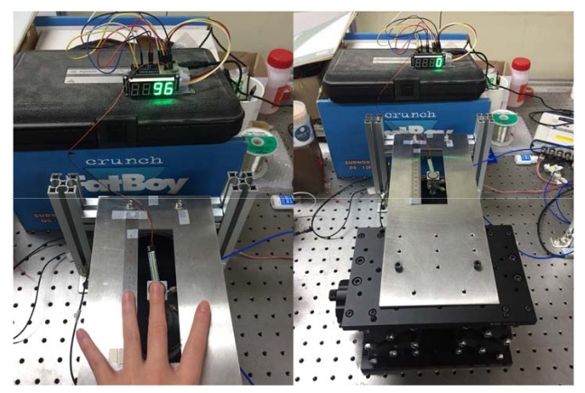
6. 인체 손가락의 진동응답특성을 이용한 생체인증
Biometric authentication utilizing vibrational characteristics of
human fingers
유혜원, 2020
[첨부파일][5]
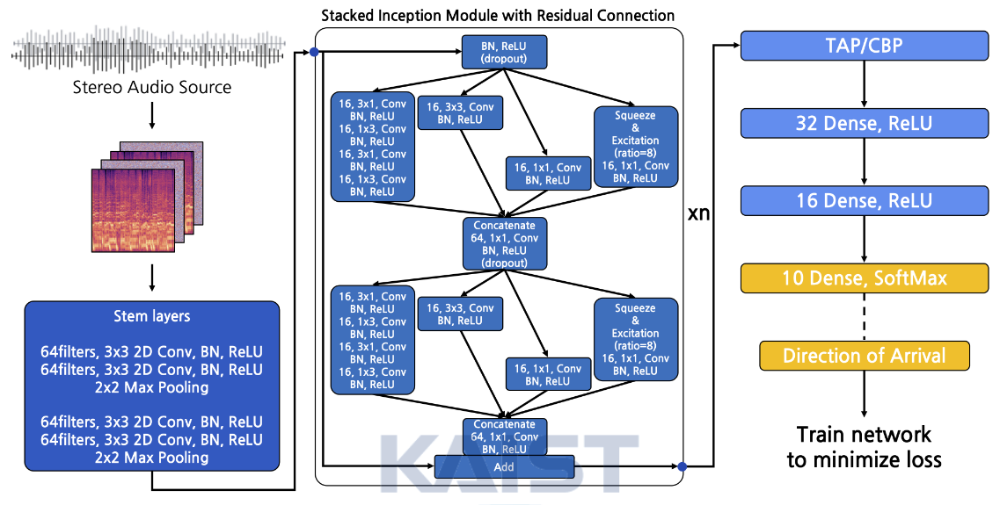
5. 인공신경망을 이용한 소음 환경에서의 듀얼 채널 기반 음성 위치
추정 기법
Direction of arrival estimation utilizing deep neural networks with
dual channel microphones under noise environment
이준혁, 2020
[첨부파일][4]
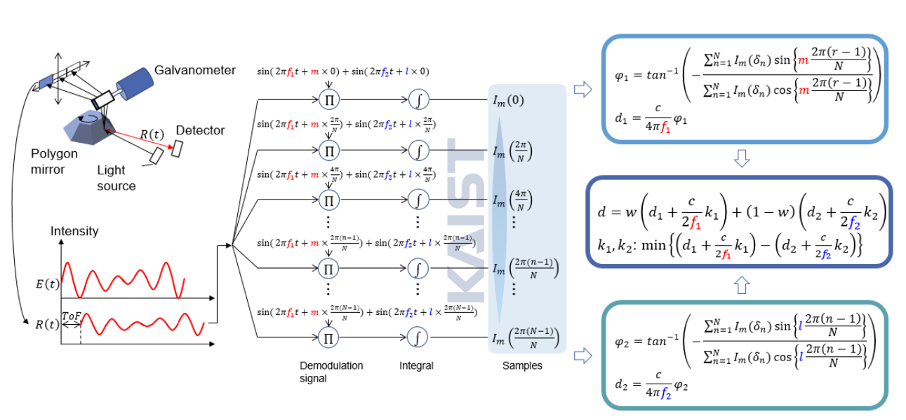
4. 이중 주파수 변조를 이용한 레이저 스캐닝 기반 3차원 형상 측정 방법
laser scanning based 3D object sensing method using dual frequency
modulation
장인규, 2020
[첨부파일][3]
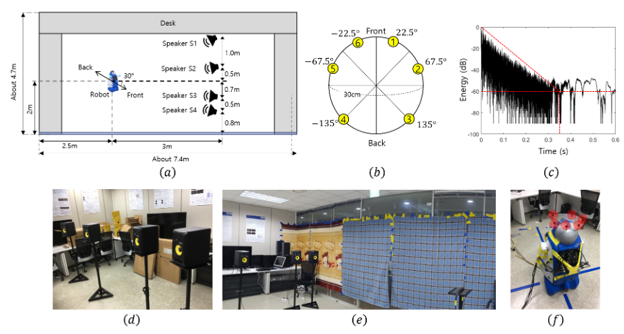
3. 잔향이 있는 다중 화자 환경에서의 두 개의 마이크로폰을 이용한
코히런스 기반 음성 분리 기법
speech separation from multi-speaker dialogues under reverberant
environment based on enhanced interaural coherence
김성후, 2019
[첨부파일][2]
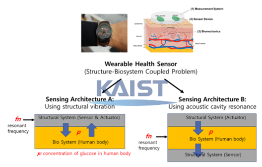
2. 구조 시스템 동특성 규명법을 이용한 유체 내 물질 농도 측정법
: 혈당측정에서의 응용
Measurement of substance concentration in fluid using structural system parameter identification : application to glucose measurement
박강재, 2018
[첨부파일][1]
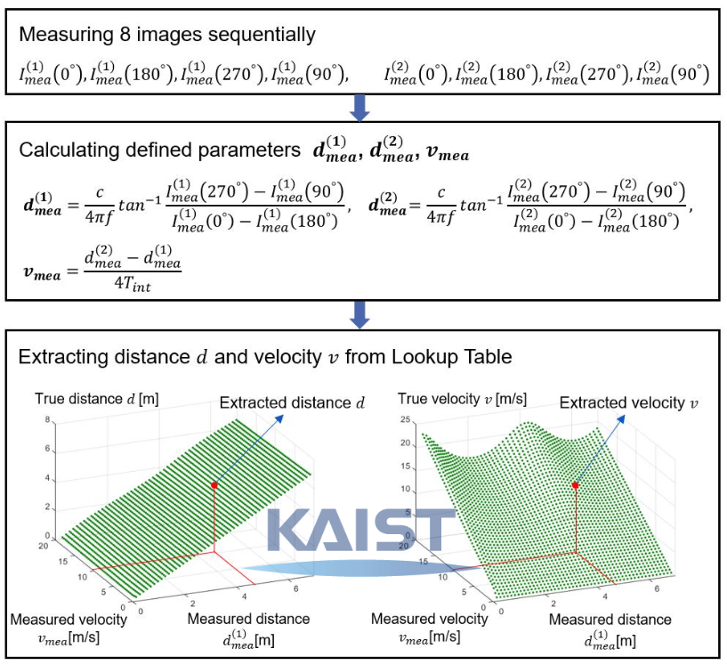
1. 움직이는 물체의 3차원 형상과 속도 이미지의 동시 측정 방법
Methodology for for simultaneous capturing of 3D shape and
velocity images of a moving object
신준오, 2018
[첨부파일]